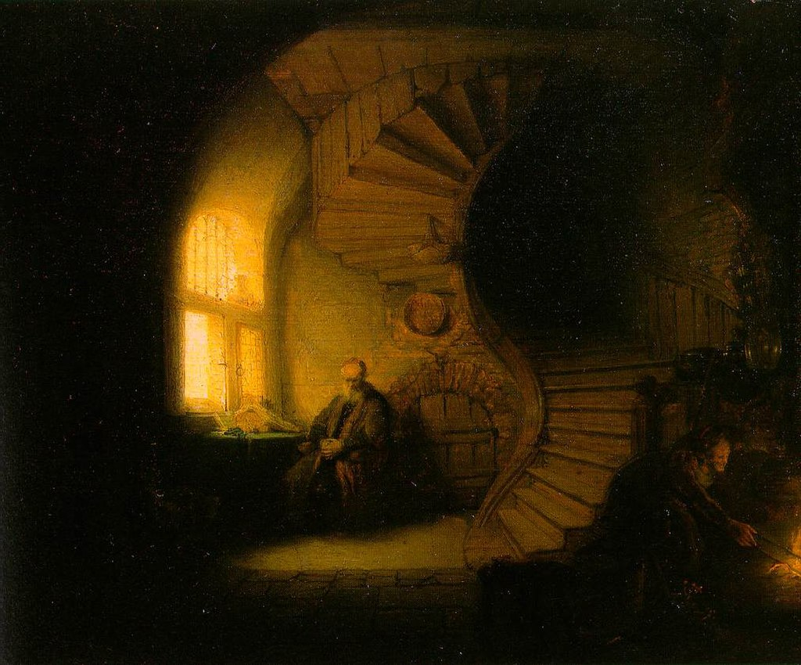

<head>
<meta charset="UTF-8" />
<meta name="keywords" content="drawing, painting" />
<meta name="description" content="drawings by Sunjy" />
<title>Sunjy</title>
<link rel="shortcut icon" type="image/x-icon" href="../../mImages/mCommon/favicon.ico" media="screen" />
<link rel="stylesheet" type="text/css" href="../../mCsses/mCommon/mCssA.css" />
<link rel="stylesheet" type="text/css" href="../../mCsses/mCommon/mCssB.css" />
<link rel="stylesheet" type="text/css" href="../../mCsses/mCommon/mCssC.css" />
<link rel="stylesheet" type="text/css" href="../../mCsses/mCommon/mCssD.css" />
<link rel="stylesheet" type="text/css" href="../../mCsses/mContent/mCssA.css" />
<link rel="stylesheet" type="text/css" href="../../mCsses/mContent/mCssB.css" />
<link rel="stylesheet" type="text/css" href="../../mCsses/mContent/mCssC.css" />
<link rel="stylesheet" type="text/css" href="../../mCsses/mContent/mCssD.css" />
</head>
<script type="text/javascript" src="../../mScripts/mContent/mContentAA.js" /></script>
<script type="text/javascript" src="../../mScripts/mContent/mContentAB.js" /></script>
<script type="text/javascript" src="../../mScripts/mContent/mContentAC.js" /></script>
<script type="text/javascript" src="../../mScripts/mContent/mContentAD.js" /></script>
<script type="text/javascript"></script> 
<script type="text/javascript">
document.write('<div class="mImgAbsolute"></div>');
/*
document.write('<p class="mFontSizeBColor" />From a white paper...</p>');
document.write('<table class="center"><tr><td>');
document.write('');
document.write('</td></tr></table>');
*/
</script>


<script type="text/javascript">
document.write('<p class="mFontSizeBColor" />Philosopher in Meditation</p>');
document.write('<p class="mFontSizeSColor" />“Philosopher in Meditation” by Rembrandt depicts two figures in a partially vaulted interior that is dominated by the central wooden spiral staircase.<br><br>The architecture of the room includes stone, brick, and wood, with an arched window and arched doors.<br><br>This painting is one of the most geometrically complex works painted by Rembrandt. The composition comprises of many straight, curved, circular, and radiating lines.<br><br>The staircase is at the center of the composition, with the curved edges of the stair spiral orchestrating the consecutive straight lines.<br><br>The figure on the left is that of an older man seated at a table in front of a window. The man’s head is bowed and his hands folded in his lap.<br><br>The figure on the right is that of an older woman tending a fire in an open hearth. There is also a third figure of a woman standing in the stairs facing the viewer, but she is virtually invisible in the painting’s dark hue created by the aging of the varnish.<br><br>The middle figure is visible in the 18th and 19th century engraved reproductions of this painting.<br><br>The popularity of the painting can be gauged by its significant presence as an image on the internet, where it is often used to represent philosophy themes.<br><br>The title “Philosopher in Meditation” has, to a large extent, been responsible for the painting’s popularity as an emblem for philosophy.<br><br>A large book and a quill are among the objects on the table in front of the older man, which supports the traditional title of Philosopher.<br><br>The other objects in the painting suggest a domestic setting, yet the improbable architecture echos a riddle to be solved.<br><br>The panel is signed “RHL-van Rijn” and dated 1632 at the bottom and left of the center. The signature is quite challenging to make out; however, the style of the name is so rare in Rembrandt’s oeuvre, plus the date specificity has led to a debate about its authenticity.<br><br>Recent scholarship suggests that the painting depicts “Tobit and Anna waiting for their son Tobias.” <br><br>This interpretation was given in an auction catalog from 1738, the first documented source that refers to this painting.<br><br>Book of Tobit<br><br>The Book of Tobit is a book of scripture that is part of the Catholic and Orthodox biblical canons.<br><br>It is not found in Protestant or Jewish biblical canons. The Book of Tobit was one of Rembrandt’s frequent Old Testament sources.<br><br>The painting may show the blind Tobit and his wife Anna waiting for the return of their only son, Tobias, a scene that Rembrandt had previously painted in 1630.<br><br>The book tells the complex story of Tobit and his son’s Tobias journey.<br><br>Tobit is an Israelite living in Nineveh after Sargon II had deported the northern tribes of Israel to Assyria in 721 BC.<br><br>Tobit was raised by his grandmother and remained loyal to the worship of God at the temple in Jerusalem.<br><br>The main narrative is dedicated to Tobit’s son,  who is sent by his father to collect money in distant Media.<br><br>After a hazardous journey, Tobias arrived in Media, he meets the beautiful Sarah and the two marry.<br><br>After various challenges, Tobias and Sarah return to Nineveh to care for his parents, but Tobit tells his son to leave Nineveh before God destroys it according to prophecy.<br><br>After Tobit dies at an advanced age, Tobias returns to Media with his family.<br><br>The book is cited for its teaching on the intercession of angels, filial piety, and reverence for the dead.<br><br>Tobit is also referenced in the Meqabyan, a book considered canonical in the Ethiopian Orthodox Tewahedo Church.<br></p>');
document.write('<table class="center" /><tr><td>');
document.write('<br>The architecture of the room includes stone, brick, and wood, with an arched window and arched doors.<br><br>This painting is one of the most geometrically complex works painted by Rembrandt. The composition comprises of many straight, curved, circular, and radiating lines.<br><br>The staircase is at the center of the composition, with the curved edges of the stair spiral orchestrating the consecutive straight lines.<br><br>The figure on the left is that of an older man seated at a table in front of a window. The man’s head is bowed and his hands folded in his lap.<br><br>The figure on the right is that of an older woman tending a fire in an open hearth. There is also a third figure of a woman standing in the stairs facing the viewer, but she is virtually invisible in the painting’s dark hue created by the aging of the varnish.<br><br>The middle figure is visible in the 18th and 19th century engraved reproductions of this painting.<br><br>The popularity of the painting can be gauged by its significant presence as an image on the internet, where it is often used to represent philosophy themes.<br><br>The title “Philosopher in Meditation” has, to a large extent, been responsible for the painting’s popularity as an emblem for philosophy.<br><br>A large book and a quill are among the objects on the table in front of the older man, which supports the traditional title of Philosopher.<br><br>The other objects in the painting suggest a domestic setting, yet the improbable architecture echos a riddle to be solved.<br><br>The panel is signed “RHL-van Rijn” and dated 1632 at the bottom and left of the center. The signature is quite challenging to make out; however, the style of the name is so rare in Rembrandt’s oeuvre, plus the date specificity has led to a debate about its authenticity.<br><br>Recent scholarship suggests that the painting depicts “Tobit and Anna waiting for their son Tobias.” <br><br>This interpretation was given in an auction catalog from 1738, the first documented source that refers to this painting.<br><br>Book of Tobit<br><br>The Book of Tobit is a book of scripture that is part of the Catholic and Orthodox biblical canons.<br><br>It is not found in Protestant or Jewish biblical canons. The Book of Tobit was one of Rembrandt’s frequent Old Testament sources.<br><br>The painting may show the blind Tobit and his wife Anna waiting for the return of their only son, Tobias, a scene that Rembrandt had previously painted in 1630.<br><br>The book tells the complex story of Tobit and his son’s Tobias journey.<br><br>Tobit is an Israelite living in Nineveh after Sargon II had deported the northern tribes of Israel to Assyria in 721 BC.<br><br>Tobit was raised by his grandmother and remained loyal to the worship of God at the temple in Jerusalem.<br><br>The main narrative is dedicated to Tobit’s son,  who is sent by his father to collect money in distant Media.<br><br>After a hazardous journey, Tobias arrived in Media, he meets the beautiful Sarah and the two marry.<br><br>After various challenges, Tobias and Sarah return to Nineveh to care for his parents, but Tobit tells his son to leave Nineveh before God destroys it according to prophecy.<br><br>After Tobit dies at an advanced age, Tobias returns to Media with his family.<br><br>The book is cited for its teaching on the intercession of angels, filial piety, and reverence for the dead.<br><br>Tobit is also referenced in the Meqabyan, a book considered canonical in the Ethiopian Orthodox Tewahedo Church.<br>" />');
document.write('</td></tr></table>');
</script>


